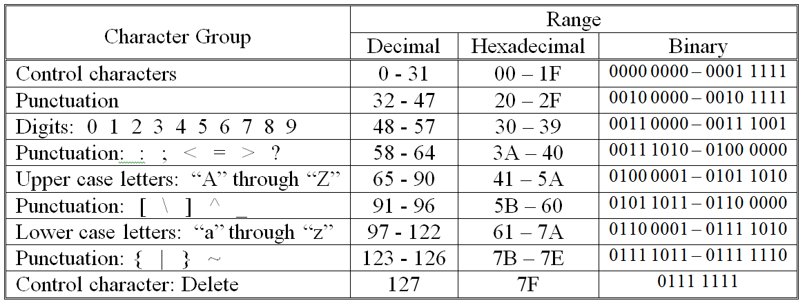
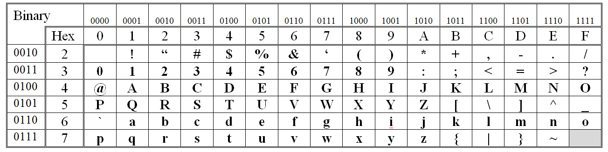

We now turn our attention to representing characters at the machine level. One of the most popular methods of representing character data in a computer is to use the ASCII character set. The basic idea behind ASCII (the American Standard Code for Information Interchange), and all other character sets, is to associate particular bit patterns with individual characters.
There are 128 symbols in the ASCII character set. These are numbered from 0 to 127 ( 7Fsixteen or 0111 1111two ). ASCII characters are grouped together in the following way:
where “Control characters” refer to “nonprinting” characters such as return, line feed, and form feed; and “Punctuation” refers to any printable character that is not a digit or letter.
contains a table illustrating the binary and hexadecimal representations of all of the printable ASCII characters. These range from the space character at position 32 (20 sixteen or 0010 0000 two), to the tilde, “~”, at position 126 (7E sixteen or 0111 1110 two).
The ASCII code for a character may be found in the table by locating the row and column in which the character appears. The row specifies the high-order hexadecimal digit (or high-order four binary digits) and the column specifies the low-order hexadecimal digit (or low-order four binary digits). For example, the ASCII code for “H” is 48 sixteen since it appears on the row labeled “4” and in the column labeled “8”. This same character expressed as a binary number is 0100 1000two. To see this, you could either directly convert 48 sixteen to 0100 1000 two or you could perform the table lookup using the binary values rather than the hexadecimal values. To determine the decimal version of the ASCII value, you must perform the conversion from base two (or base sixteen) to base ten using the algorithm discussed in . In the case of “H” the decimal representation is 72 ten (4 * 16 + 8 * 1).
The printable ASCII Characters
While any assignment of bit patterns to characters would accomplish the primary task of enabling computers to store character data, a lot of thought went into the design of ASCII. For example, upper case and lower case characters differ in ASCII by exactly one bit (e.g., “A” is 0100 0001 and “a” is 0110 0001). Hence, any lower case character can be changed to upper case by simply setting bit six to “0”. Conversion from upper case to lower case is just as easy – set bit six to “1”.
Ok, time out for a second. This concept of mapping characters to bit patterns may make sense, but isn’t it true that when you type something into your computer, like an email message or a term paper, you type characters on a keyboard and see characters on the screen – not ASCII codes? What gives?
What gives is that the ASCII codes are hidden from the computer user. When you type “yo” on your keyboard, you first hit a key marked “y” – which causes the keyboard circuitry to generate the ASCII code “0111 1001”. Next you strike the key marked “o” causing the keyboard circuitry to generate the ASCII code “0110 1111”. The display circuitry built into your computer’s video card, in turn displays the character “y” when it receives the ASCII code “0111 1001” and “o” when it receives the ASCII bit pattern “0110 1111”. Hence, the user never sees the ASCII codes. From his or her perspective, “yo” was typed on the keyboard and displayed on the screen.
It is interesting to note what happens when you hold down the shift key as you strike the “y”. What the shift key actually does (for the keys marked with letters of the alphabet) is set bit six to “0”. Thus, the combination of “shift” and “y” produces “0101 1001” which is the ASCII code for “Y”
Exercises for
I will not eat them in the rain.
43 69 6E 64 79 20 4C 6F 75 20 57 68 6F